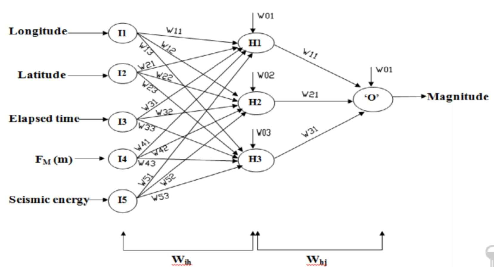
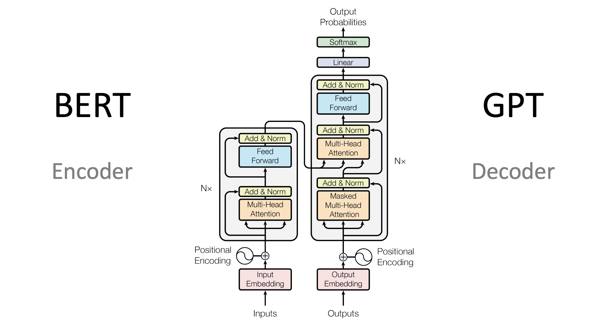

library(tidyverse)
library(arrow)
library(quanteda)
library(quanteda.textmodels)
# Import data
clean_text_data <- read_parquet("../data/wikipedia_nobel_biographies_summaries_clean_extended.parquet")
# Drop missings
clean_text_data <- clean_text_data %>%
filter(pageid != 7152417)
# Create training and test set
set.seed(123)
clean_text_data$train <- sample(x = c(TRUE, FALSE),
size = nrow(clean_text_data),
replace = TRUE,
prob = c(.8, .2))
# we first create a corpus
corpus <- corpus(clean_text_data, text_field = "extract", docnames = "pageid")
# Convert to a DFM
dfm <- corpus %>%
tokens() %>%
dfm() %>%
dfm_remove(stopwords("en"))
# Subset to training set observations
dfm_train <- dfm_subset(dfm, train)
# Subset to test set observations
dfm_test <- dfm_subset(dfm, !train)
# Check dimensions
dim(dfm_train) # 808 documents and 8239 tokens
dim(dfm_test) # 200 documents and 8239Day 2 Notes (Half Day)
Supervised Learning, Word Embeddings & LLMs
This page picks up where Day 1 left off (clean_text_data, etc.) — datasets can be downloaded from the Data Preparation section there.
Supervised Learning
In supervised learning we’ve labeled data. Thus, we want to learn a model that is able to predict our target feature. For example, we have our biography summaries and we want to learn a model that is able to predict whether the summary is indicating whether the summary is of female or male award winner. Our gender column is our target feature. Our text is our predictor, since we would like to infer the gender of the winner based on the words in the text.
To build a model that generalizes well we need to split our data in training and test data. The training data is used to train our model and our test data is used to test how well our model is doing when predicting unseen data. There are several pitfalls when splitting the data. For example, if we have a very imbalanced data set, we need to make sure that the distribution of the target feature is similar in both data sets. However, we will explore that in the coming section on model evaluation.
Dictionaries
Dictionaries have frequently been used in text analysis. A dictionary is a predefined list of words that are associated with specific categories or sentiments. Each word in the dictionary is assigned to one or more categories, allowing for the classification of text based on the presence of these words.
We use the Agency (194 words) and Communion (186 words) dictionaries from Pietraszkiewicz, Formanowicz, Gustafsson Sendén, Boyd, Sikström & Sczesny (2019), “The Big Two Dictionaries: Capturing Agency and Communion in Natural Language” (European Journal of Social Psychology), freely available on OSF. Agency words capture achievement, independence, and competence (e.g. achieve, confident, independent); communion words capture warmth, relationships, and care (e.g. caring, family, support). Instead of predicting gender from the text, we use them descriptively — to measure whether female and male Nobel biographies differ in how agentic or communal their language is.
⬇ Download agency_dictionary.txt ⬇ Download communion_dictionary.txt
corp <- corpus(clean_text_data, text_field = "extract", docnames = "pageid")
toks <- tokens(corp, remove_punct = TRUE) %>%
tokens_tolower()
dfm_all <- dfm(toks)
# Agency & Communion dictionary (Pietraszkiewicz et al. 2019, https://osf.io/p7fzb/)
agency_words <- readLines("../data/agency_dictionary.txt")
communion_words <- readLines("../data/communion_dictionary.txt")
dict_agency_communion <- dictionary(list(
agency = agency_words,
communion = communion_words
))
dfm_ac <- dfm_lookup(dfm_all, dict_agency_communion)
# normalize by document length so longer bios don't just score higher
dfm_ac_prop <- dfm_weight(dfm_ac, scheme = "prop")
ac_by_doc <- convert(dfm_ac_prop, to = "data.frame") %>%
bind_cols(gender = docvars(dfm_all, "gender"))
# compare agentic vs. communal language by gender
ac_by_doc %>%
group_by(gender) %>%
summarise(mean_agency = mean(agency), mean_communion = mean(communion))Naive Bayes Classification
Naive Bayes (NB) is a simple yet effective probabilistic classifier based on Bayes’ Theorem. It predicts the most likely class of data by comparing the probabilities of each class given the observed features. The “naive” assumption is that all features are conditionally independent given the class, which simplifies computation. Naive Bayes is widely used in high-dimensional tasks such as text classification.
In plain terms: given some conditions, it answers “which outcome is most probable?” For example, given that the weather is rainy and the temperature is 6 degrees, Naive Bayes can estimate the probability that someone will (or will not) play golf, and classify accordingly.
y <- factor(docvars(dfm_train, "gender"))
nb_train <- textmodel_nb(x = dfm_train, y = y, prior = "docfreq")
class_test <- predict(nb_train, newdata = dfm_test, type = "class")
docvars(dfm_test, "pred_nb") <- class_test
confusion_test <- table(
predicted = docvars(dfm_test, "pred_nb"),
truth = docvars(dfm_test, "gender")
)
confusion_testWe can already see that in most cases the model predicted male when the winner was actually male. That makes sense since male award winners are highly over-represented in our data set. It’ll always be a good guess to just predict the label “male”. If the target feature is so highly skewed towards one category we’re talking about class imbalances. This is a known problem in Machine Learning. There are several techniques how to tackle class imbalances, such as upsampling the minority class.
Model evaluation
When the model makes the prediction it can make two mistakes: it can falsely classify instances as female, even though they were actually male (False Positives), and it can classify instances as male even though they were actually female (False Negatives). We have several indicators to assess the performance of our model (silly meme explains it quite well).
\[Accuracy = \frac{\text{Correctly Classified}}{\text{Total Classifications}}\]
\[Precision = \frac{\text{True Positives}}{\text{False Positives} + \text{True Positives}}\]
\[Recall = \frac{\text{True Positives}}{\text{False Negatives} + \text{True Positives}}\]
- Also called Sensitivity or True Positive Rate.
\[F_1\ Score = 2 \times \frac{Precision \times Recall}{Precision + Recall}\]
Task
- Any idea why do we have so many different measurements? Why are we interested in the rate of true positives and true negatives separately?
library(caret)
confusion_test_statistics <- confusionMatrix(confusion_test,
positive = "female")
confusion_test_statistics- Why is our true negative rate zero?
Task
- Can we build a predictor for STEM vs. non-STEM prices?
Show solution
clean_text_data$stem <- ifelse(clean_text_data$category %in% c("Chemistry", "Physiologyor Medicine", "Medicine", "Physics"), "STEM", "non-STEM")
corp <- corpus(clean_text_data, text_field = "extract", docnames = "pageid")
toks <- tokens(corp, remove_punct = TRUE) %>%
tokens_tolower()
dfm_all <- dfm(toks)
dfm_train <- dfm_subset(dfm_all, train)
dfm_test <- dfm_subset(dfm_all, !train)
y <- factor(docvars(dfm_train, "stem"))
nb_train <- textmodel_nb(x = dfm_train, y = y, prior = "docfreq")
class_test <- predict(nb_train, newdata = dfm_test, type = "class")
docvars(dfm_test, "pred_nb") <- class_test
confusion_test <- table(
predicted = docvars(dfm_test, "pred_nb"),
truth = docvars(dfm_test, "stem")
)
confusion_test
confusion_test_statistics <- confusionMatrix(confusion_test,
positive = "STEM")
confusion_test_statisticsWord Embeddings
The meaning of words is defined by the company they keep (Firth, 1957). We represent meaning using a vector of each word. Vectors are constructed in a way that words that are similar in meaning are also similar in the vector space. Our goal is to build a dense vector for each word, chosen so that it is similar to vectors of words that appear in similar context and thus, have a similar meaning. These representations are known as word embeddings because we “embed” words into a low-dimensional space (low compared to the vocabulary size).
Word Embeddings are pre-trained on large corpora, for instance on Wikipedia. The most common ones are Word2Vec, Glove Project and Fasttext. They require a lot of computational power and data to be trained. A window size defines how many words before and after the target word we consider as context — words that frequently share the same context end up with similar vectors.
df <- arrow::read_parquet("../data/wikipedia_nobel_biographies_summaries_clean.parquet")
df <- df %>%
drop_na()library(data.table)
# path to your embeddings file
path <- "path/to/your/glove_or_dolma_embeddings.txt"
# Read Glove file (no header line, unlike fastText)
emb <- fread(path,header = FALSE,quote = "",encoding = "UTF-8")
# Split into words + vectors
words <- emb[[1]]
glove <- as.matrix(emb[, -1, with = FALSE])
rownames(glove) <- words
# Example: look up vector for "dog"
glove["dog", ]
# dimensions
dim(glove)The Glove embeddings contain 1200001 terms and 300 dimensions (columns).
library(text2vec)
similarities <- function(target_word, n){
# Extract embedding of target word
target_vector <- glove[which(rownames(glove) %in% target_word),]
# Calculate cosine similarity between target word and other words
target_sim <- sim2(glove, matrix(target_vector, nrow = 1))
# Report nearest neighbours of target word
names(sort(target_sim[,1], decreasing = T))[1:n]
}
similarities("woman", n = 7)
similarities("men", n = 7)library(text2vec)
library(quanteda)
# Construct corpus
corp <- corpus(df, text_field = "extract")
# Create vocab list based on dfm
vocab <- featnames(
dfm(tokens(corp, remove_punct = TRUE) %>%
tokens_tolower() %>%
tokens_remove(stopwords("en"))))
# Create function that selects the nearest neighbors
nearest_from_summaries <- function(glove, query, top_n = 20, vocab = NULL) {
rn <- rownames(glove)
cand <- if (is.null(vocab)) glove else glove[rn %in% vocab, , drop = FALSE]
# expand wildcards (case-insensitive) and collect matches
to_rx <- function(q) paste0("^", gsub("\\*", ".*", tolower(q)), "$")
matches <- unique(unlist(lapply(query, function(q)
grep(to_rx(q), rn, ignore.case = TRUE, value = TRUE)
)))
q_vec <- colMeans(glove[matches, , drop = FALSE])
sims <- text2vec::sim2(cand, matrix(q_vec, nrow = 1),
method = "cosine", norm = "l2")[, 1]
sims <- sims[setdiff(names(sims), matches)]
sort(sims, decreasing = TRUE)[1:top_n]
}# 3) Examples
# "female concept" neighbours (woman, women, female*)
nn_female <- nearest_from_summaries(glove,
query = c("woman*", "women", "female*"),
top_n = 20, vocab = vocab)
# "male concept" neighbours (man, men, male*)
nn_male <- nearest_from_summaries(glove,
query = c("man", "men", "male*"),
top_n = 20, vocab = vocab)
nn_female[1:20]
nn_male[1:20]Visualization
We can also plot our word embeddings. Therefore we need to use reduce our dimensions to two. The closer the terms are to one another, the closer they are in their meaning.
library(ggplot2)
show_map <- function(words){
M <- glove[intersect(words, rownames(glove)), , drop=FALSE]
Z <- prcomp(M, center=TRUE, scale.=FALSE)$x[,1:2]
df <- data.frame(Z, word=rownames(Z))
ggplot(df, aes(PC1, PC2, label=word)) +
geom_point() + ggrepel::geom_text_repel(size=3)
}
show_map(c("einstein","curie","planck","nobel","physicist","chemist", "literature", "ernaux", "peace", "literatur", "peac", "united"))Large Language Models (LLMs)
What are Large Language Models?
Large Language Models (LLMs) are advanced artificial intelligence models designed to understand, generate, and manipulate human language. They are built using deep learning techniques, particularly neural networks, and are trained on vast amounts of text data to learn the statistical patterns and structures of language. A useful distinction is between foundation models and LLMs. Foundation models are pre-trained on a large corpus of text data and can be fine-tuned for specific tasks. LLMs are a subset of foundation models that are specifically designed to handle natural language processing tasks.
Finetuning: When we fine-tune a model we used a pre-trained model and specialize it for our downstream task. This is done by training the model on a smaller, task-specific dataset while keeping the pre-trained weights as a starting point. Fine-tuning allows the model to adapt to the specific nuances and requirements of the target task, improving its performance without needing to train a new model from scratch.
Prompting: Instead of fine-tuning the entire model, users can provide specific prompts or instructions to guide the model’s behavior for a particular task. This approach allows for more flexibility and adaptability without the need for extensive retraining.
There are two possible versions of prompting: Zero Shot Learning and Few Shot Learning. In zero-shot learning, the model is given a task without any prior examples or training on that specific task. The model relies solely on its pre-existing knowledge and understanding of language to generate a response. In few-shot learning, the model is provided with a small number of examples or demonstrations of the task at hand. These examples help the model understand the context and requirements of the task, allowing it to generate more accurate and relevant responses.
It is always a good idea to start with prompting and only fine-tune the model if prompting does not work well enough, due to the high computational and labour costs and the need for large amounts of labeled data.
Why are LLMs so powerful?
LLMs are powerful because they can capture the complexities and nuances of human language, enabling them to perform a wide range of tasks with high accuracy. They can generate coherent and contextually relevant text, answer questions, translate languages, summarize information, and even engage in conversations. Their ability to understand context and generate human-like responses makes them valuable tools for various applications, including chatbots, virtual assistants, content creation, and more. All LLMs are a form of a transformer model. Transformer model contain an attention mechanism that allows them to weigh the importance of different words in a sentence when making predictions. This enables them to capture long-range dependencies and context more effectively than previous models like RNNs or LSTMs, which is the reason why LLM’s are so powerful and transformational within the field.
What are feedforward neural networks?

A feedforward neural network is a type of artificial neural network where the connections between the nodes do not form a cycle. In this architecture, information flows in one direction, from the input layer through one or more hidden layers to the output layer. Each node (or neuron) in a layer is connected to every node in the subsequent layer, and each connection has an associated weight that determines the strength of the connection.
Transformer Models
How does a transformer model work?

A transformer model contains a stack of encoders and decoders. The encoder takes the input text and processes it through multiple layers of self-attention and feedforward neural networks to create a rich representation of the input. The decoder then uses this representation to generate the output text, also through multiple layers of self-attention and feedforward networks. The attention mechanism allows the model to focus on different parts of the input when generating each word in the output, enabling it to capture context and relationships effectively. The models learned to understand language by next word/sentence prediction and masking particular words.
What is Ollama?
Llama is a LLM developed by meta and is in comparison to many other competitors an open source model. It is not as large as GPT-3 or GPT-4, but it is still a powerful model that can be used for a variety of tasks. Ollama is a platform that allows you to run and manage large language models (LLMs) on your local machine. It provides an easy-to-use interface for interacting with these models, making it accessible for developers and researchers who want to leverage the power of LLMs without needing extensive infrastructure or cloud services.
library(rollama)
# available models you have installed locally
list_models()
# Example usage
# pull_model("mistral:7B") # download a model
ping_ollama() # let's check if it is thereSystem and user prompts are core components of prompt engineering. A system prompt provides foundational instructions to the model, such as assigning a role (“You are a research assistant” or “You are an expert in X”) and specifying constraints (e.g., ethical guidelines, style, or behavior). System prompts are typically consistent across many users or sessions. In contrast, a user prompt contains task-specific instructions, such as “Classify these sentences into categories,” and may include additional context or examples to help the model perform the task effectively.
We’ll try out zero shot learning first: We first need a some text. Then we construct the prompt and send it to the model.
# We can simply talk to the model
rollama::query("What is the capital of New York", model = "llama3.1")
# lets construct the query
# Therefore we need a system message and a user prompt template.
# A system message usually starts with a role we're assigning.
df$zero <- NA_character_
for (i in 1:2) {
print(i)
question <- "Task: You're a research assistant that helps to analyze texts. Your aim is to classify whether the summary of a biographie describes a female or a male nobel price winner."
text <- df$extract[i]
question <- paste(question, text)
result <- query(question, model ="llama3.1")
print(result)
df$zero[i] <- result[[1]]$message$content
}